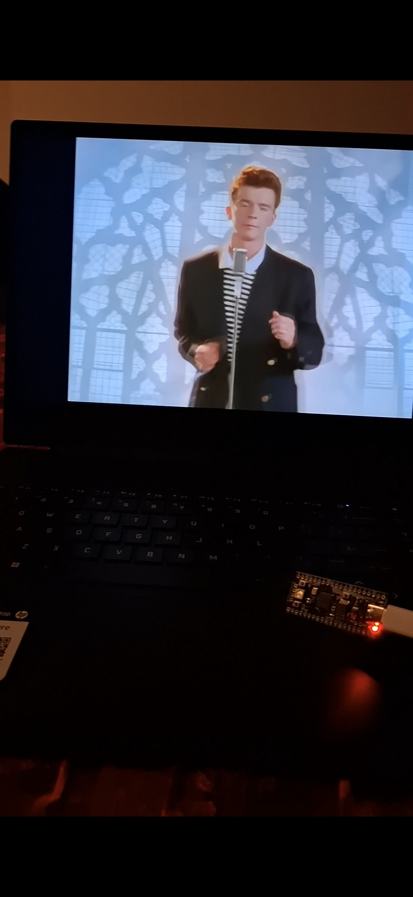

This project transforms a Raspberry Pi Pico into a high-speed, programmable USB Human Interface Device (HID) capable of executing automated keystroke payloads. Built using MicroPython, the device acts as a hardware based automation tool that can impersonate a keyboard to deliver pre configured script payload the moment it is connected to a host machine.
Built for security research, red-team exercises, and legitimate administrative automation.By leveraging the RP2040’s native USB support, the device operates entirely within the USB HID specification no special software is needed on the target machine. If it has a USB port, it works.
The core of the system is a custom Ducky Script parser built in MicroPython on the asyncio framework. When plugged in, the Pico initializes as a standard USB Keyboard using the adafruit_hid library. It then reads a payload.dd text file from its internal flash memory. Unlike simpler parsers, this implementation is non-blocking; it processes commands like STRING, DELAY, and GUI r while maintaining system responsiveness. The script also features a 5-second safety delay upon startup, allowing the developer time to intercept the execution if necessary.
Payloads are plain text files (.dd or .txt) containing a sequential list of instructions that the Pico parses in real time. The system utilizes a non blocking asynchronous parser built with asyncio, allowing the device to handle complex timing without freezing the HID stack.
The parser interprets several core primitives:-STRING / STRINGLN: Types out the provided text or text followed by a newline.-DELAY: Pauses execution for a specific number of milliseconds-REPEAT: A specialized command that re-executes the previous line a defined number of times.-Modifier Keys: Supports system level commands like GUI, CTRL, ALT, and SHIFT by mapping them to the adafruit_hid Keycode library.-DEFAULT_DELAY: Sets a global wait time between every line of the script to ensure the target OS can keep up with the injection speed.
Unlike standard linear scripts, this implementation is Timing aware. By using await asyncio.sleep(), the Pico can manage the USB connection state while waiting for the next command, resulting in much higher reliability when executing multi step payloads like reverse shells.
The device has been tested against Windows, macOS, and Linux targets. Common red-team scenarios include opening a reverse shell via PowerShell in under three seconds, exfiltrating clipboard contents, and disabling security tooling — all without triggering kernel-level USB filtering on default OS configurations.
The key lesson from this project: USB HID is implicitly trusted by every major operating system. Physical access via a USB port is, by default, full access.